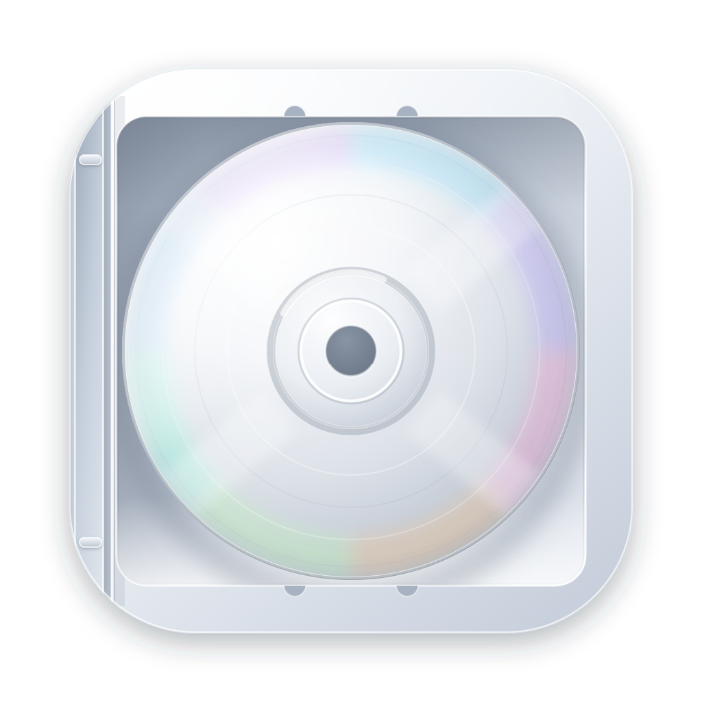
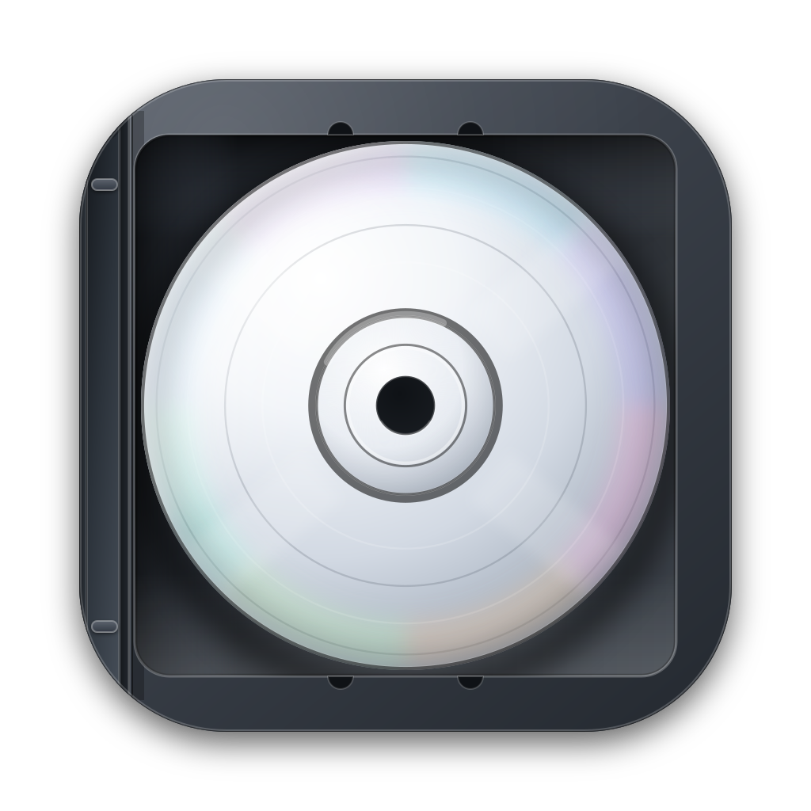
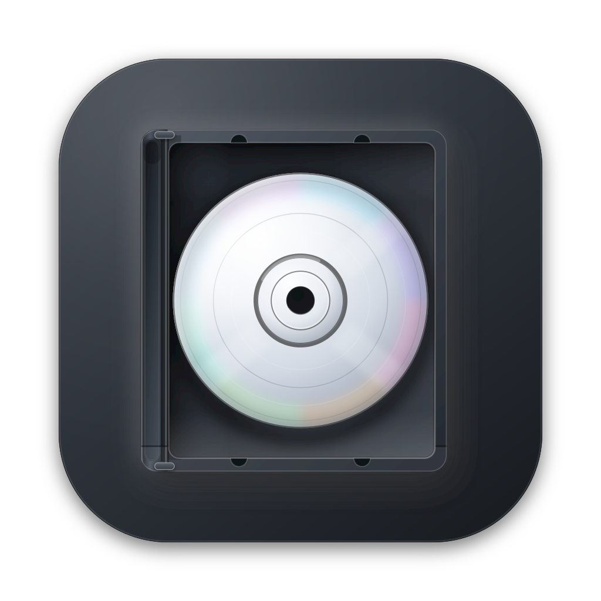

Alternative — floating case
The earlier version keeps a separate plate behind the case, so the disc is smaller. Kept for comparison.


Full-bleed neumorphic CD jewel case · unlabeled disc · macOS squircle 824 / 1024 · centre hole at 512, 512


The earlier version keeps a separate plate behind the case, so the disc is smaller. Kept for comparison.
